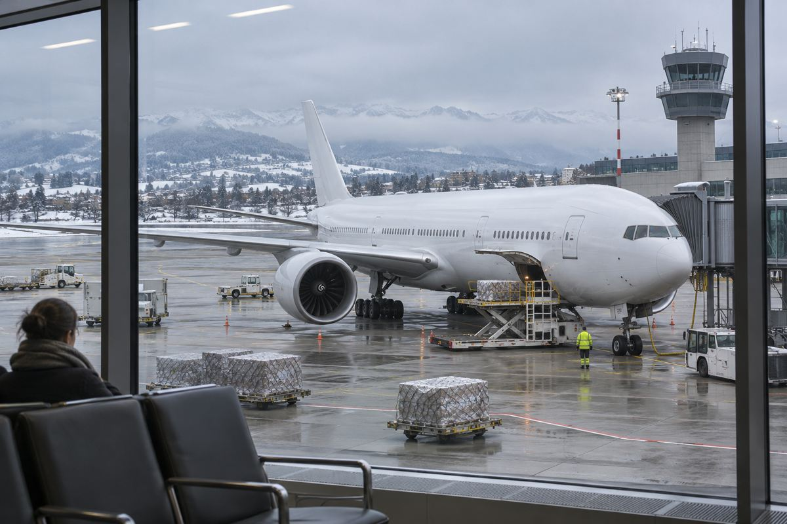

항공 / EXPLAINED
SWISS, 두바이 재개 미루고 12월 2일부터 델리 하루 두 편 계획
11월 25일로 잡았던 두바이 재개는 겨울 시간표 종료 시점까지 보류됐다.

스위스국제항공 SWISS가 11월 11일 취리히–두바이 운항 재개를 2026~2027년 겨울 시간표가 끝나는 2027년 3월 27일까지 보류한다고 밝혔다. 직전 재개 계획은 11월 25일이었다. 같은 공지에서 취리히–델리의 두 번째 일일편을 12월 2일부터 겨울 시간표 종료까지 다시 편성한다고 발표했다. 발표일은 11월 11일이고, 델리 추가편이 실제로 출발할 예정인 첫날은 12월 2일이다.
SWISS는 루프트한자그룹 소속으로 취리히를 장거리 연결의 거점으로 쓰는 항공사다. 이번 공지는 두 시장의 운항 계획을 함께 다루지만, 두바이에 쓸 예정이던 특정 기체를 델리로 돌렸다고 밝히지는 않았다. 두바이 재개 보류 이유는 회사 표현으로 운영상의 사유다. 편집부는 두 노선의 공급을 별도로 조정한 것으로 읽었다. 항공사가 공개하지 않은 기체 배정이나 구체적인 사유까지 추정할 근거는 없다.
델리에서는 기존 하루 한 편이 유지되고 추가편이 합류한다. 계획대로라면 해당 기간 SWISS의 취리히–델리 운항 빈도는 하루 두 편이다. 다른 항공사까지 포함한 양 도시 전체 공급이나 좌석 수가 두 배라는 계산은 할 수 없다. 기재에 따라 편당 좌석 수가 다르고, 날마다 같은 기종을 보장하지 않기 때문이다. 공지에는 추가편에 주로 에어버스 A340을 배정한다고 돼 있다.
A340은 네 개의 엔진과 두 개의 객실 통로를 갖춘 광동체 기종이다. 항공기 이름은 배치될 수 있는 기재를 알려 주지만 정확한 좌석 배열이나 기내 장비는 예약 화면의 편별 정보가 필요하다. ‘주로 A340’이라는 표현에는 대체 기재가 들어갈 여지가 있다. 델리행을 이용하는 사람이라면 기종과 함께 취리히 도착편에서 새 출발편으로 이어지는 대기 시간, 인도 도착 시각, 수하물 연결을 확인하는 게 더 직접적인 비교가 된다.
두바이 예약 고객에 대해서는 항공사가 취소를 알리고 대체편으로 다시 예약한다고 안내했다. 통보를 받았다면 대체편의 도착 공항과 전체 여정의 시간을 원래 일정과 비교할 수 있다. 다른 항공사나 별도 예약으로 이어지는 구간이 있다면, 재예약 통보 한 건으로 그 구간까지 바뀌는지 예약별로 확인해야 한다. 공개 공지는 개인별 대체편이나 확정된 좌석을 보여 주지 않는다.
10월 23일자 이전 공지도 같은 페이지에 남아 있다. 공지 목록을 위에서부터 읽어야 하는 이유다. 아래쪽의 더 오래된 항목에는 델리 추가편에 A330을 쓴다는 설명이 있지만, 이는 10월 24일까지의 여름 시간표에 관한 것이었다. 12월부터의 추가편은 이번에 언급된 A340 중심 계획으로 읽어야 한다. 지난 공지에서 복사한 편명이나 출발 시각도 자동으로 새 편에 적용되지 않는다. 날짜를 입력한 예약 결과를 최신 공지와 대조하면 다른 시즌의 운항 정보를 섞을 가능성을 줄일 수 있다.
3월 27일은 공지가 제시한 중단 범위의 끝이다. 이후 첫 항공편의 판매와 실제 운항은 후속 일정에서 확인해야 한다. 델리 쪽도 현재 확인되는 것은 추가편 운항 계획이며, 시작 뒤의 실적은 아직 없다. 이번 변경으로 두바이와 델리를 같은 겨울 여행으로 준비해도 출발 날짜에 따라 필요한 확인 항목이 달라졌다.